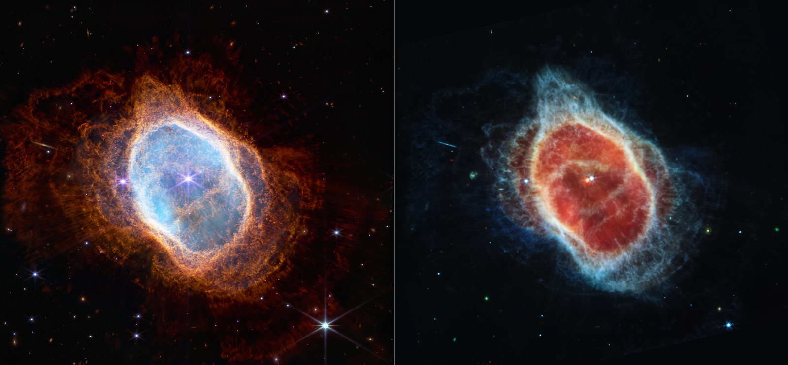
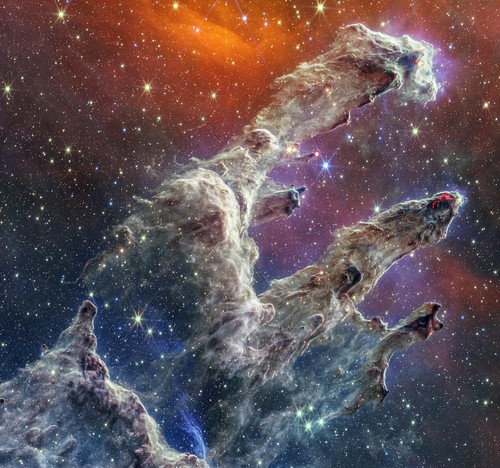

JWST Gallery
Carina Nebula: JWST captures the majestic Carina Nebula, unveiling star birth regions hidden within cosmic dust. Its infrared view reveals intricate details of gas and dust, showcasing stellar nurseries.

Stephan’s Quintet: JWST showcases the dynamic beauty of Stephan’s Quintet, where four galaxies are locked in a gravitational dance. The image reveals shockwaves, gas streams, and star formation regions in vivid detail.
The images show the Southern Ring Nebula in infrared and visible light. The JWST's infrared view reveals new details of the nebula's structure, providing a unique perspective on this cosmic object.
The image shows NGC 7469, a spiral galaxy with an active galactic nucleus. The bright X-ray emission from the center is likely due to the accretion of material onto the supermassive black hole.
The image shows the Pillars of Creation, a region of star formation in the Eagle Nebula, as captured by the James Webb Space Telescope. The JWST's infrared view reveals previously unseen details of the pillars, including young stars that are still forming.

The image shows a pair of merging galaxies, likely ZW II 96, as captured by the James Webb Space Telescope. The JWST's infrared view reveals the galaxies' intricate structures and the effects of their gravitational interaction.
The image shows Stephan's Quintet, a dense cluster of galaxies, as captured by the JWST. The JWST's infrared view reveals the intricate details of the galaxies and the hot gas that surrounds them.